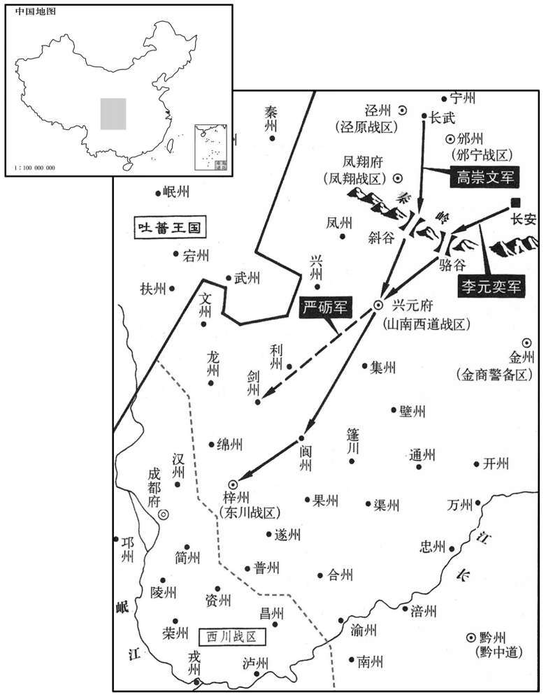
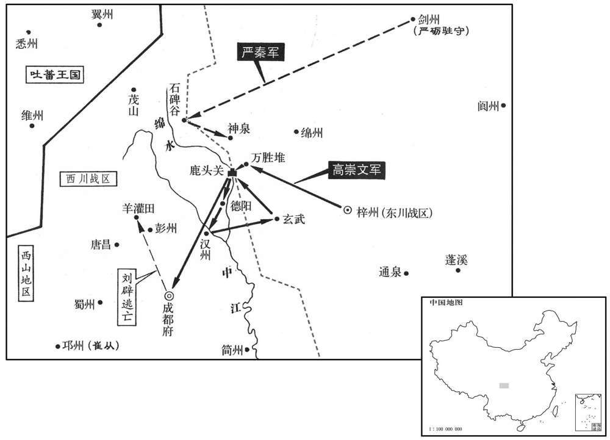

公元806年资治通鉴：本年记事、原文与白话对照
按原书编年位置阅读；追叙和史论不等于本年发生的事件。白话采用所据译本，缺译不以生成译文补齐。
卷237 · 本年记事
公元806年 · 唐宪宗昭文章武大圣至神孝皇帝元和元年
元和元年〔（丙戍、八〇六）〕
上传原文的注释括号有异常，字符原样保留；无法可靠划分的段落默认全文显示。
本年事件索引（现代整理）
- 宪宗率群臣赴兴庆宫为太上皇上尊号
- 宪宗大赦天下并改元元和
- 韩皋任奉义节度使，伊宥知安州留后
- 太上皇在兴庆宫去世
- 刘辟要求独领剑南三川未获准，遂围攻李康
- 杜黄裳劝宪宗委任高崇文讨伐刘辟
- 杜黄裳劝宪宗整顿藩镇，按法度任命节帅
- 高崇文整训五千士卒，奉命立即出兵
- 刘辟攻陷梓州并俘获李康
- 奚王诲落可入朝，受封饶乐郡王
- 田季安加同平章事
- 宪宗询问为政之道，杜黄裳主张慎择贤臣委任
- 范希朝被调离京西行营节度使
- 高崇文攻入梓州，李康被斩，刘辟官爵遭削夺
- 韩全义的外甥杨惠琳拒绝交出夏绥留后，被张承金杀死
- 韦丹请求以梓州授予高崇文，德宗任其为东川节度副使
- 潘孟阳因铺张游宴、收受贿赂被免职
- 元稹、独孤郁、白居易等人通过制举考试
- 杜佑辞去财赋职务，李巽接掌度支盐铁转运
- 刘澭加任保义军节度使
- 元稹请求恢复谏官奏事和面君制度
- 元稹再疏劝宪宗允许谏官进言，并限制非时贡献
- 元稹请求尽早为皇子择师，防范王叔文之乱重演
- 邵王李约去世
- 程执恭任横海节度使
- 郑余庆罢相改任太子宾客
- 尊太上皇后为皇太后
- 高崇文连续攻破刘辟鹿头关防线
- 刘济、李师古加兼侍中
- 高崇文在德阳、汉州连续击败刘辟
- 李师古病重，私下考验诸将对其弟李师道的态度
- 高崇文在玄武击溃刘辟军，西川援兵归其节制
- 顺宗安葬于丰陵，庙号顺宗
- 郭氏被立为贵妃
- 宪宗册立皇子李宁为邓王，李宽为澧王
- 宪宗册封皇子李宁为邓王、李宽为澧王等
- 李师道暂掌平卢军务，杜黄裳主张乘机分化
- 滑涣借与宦官相结干预政事，事发后被赐死
- 高崇文攻克鹿头关并收复成都，刘辟被擒
- 刘辟反叛时，崔从坚守邛州城池
- 韦皋旧属到成都请罪，高崇文礼待遣还
- 高崇文拒绝将刘辟妾室献给监军
- 杜黄裳赞许高崇文平蜀之功
- 李渤被征为左拾遗，称病不至
- 张茂昭入朝
- 东川增设六州，严砺、高崇文分别任节度使
- 柳晟安抚欲哗变的山南西道军士
- 李师道任平卢节度使
- 刘辟及其党羽在长安被诛
- 张愔求代，王绍接任武宁节度使并复领濠、泗二州
- 吐突承璀任左神策中尉
- 回鹘遣摩尼教徒入唐，获准在境内建寺

本年形势与背景参考图

本年形势与背景参考图
春，正月，丙寅朔，上帅群臣诣兴庆宫上上皇尊号。〔从百官之请也。帅，读曰率。上，时掌翻。〕
春季，正月，丙寅朔（初一），宪宗率领群臣来到兴庆宫，向太上皇进献尊号。
丁卯，赦天下，改元。
丁卯（初二），宪宗大赦天下罪囚，改年号。
辛未，以鄂岳观察使韩皋为奉义节度使。〔德宗贞元十九年名安黄军曰奉义。〕癸酉，以奉义留后伊宥为安州刺史兼安州留后。宥，慎之子也。壬午，加成德节度使王士真同平章事。
辛未（初六），宪宗任命鄂岳观察使韩皋为奉义节度使；癸酉（初八），任命奉义留后伊宥为安州刺史兼安州留后。伊宥是伊慎的儿子。壬午（十 七日），加封成德节度使王士真为同平章事。
甲申，上皇崩于兴庆宫。〔年四十六。〕
甲申（十九日），太上皇在兴庆宫驾崩。
刘辟既得旌节，〔去年以辟知西川节度，见上卷。〕志益骄，求兼领三川，上不许。辟遂发兵围东川节度使李康于梓州，〔东川节度使，领梓、剑、绵、普、陵、荣、遂、合、渝、泸等州，治梓州。梓州，汉郪县地，刘禅置东广汉郡。梁武陵王纪置新州，隋为梓州。旧志：梓州至京师二千九十里。宋白曰：梓州，取梓潼江为名。〕欲以同幕卢文若为东川节度使。推官莆田林蕴力谏辟举兵，〔武德五年，分南安置莆田县，时属泉州。风俗通曰：林姓，林放之后。孙愐曰：周平王次子林开之后。鲁有林放、林雍，齐有林元。〕辟怒，械系于狱，引出，将斩之，阴戒行刑者使不杀，但数砺刃于其颈，〔数，所角翻。〕欲使屈服而赦之。蕴叱之曰：「竖子，当斩即斩，我颈岂汝砥石邪！」辟顾左右曰：「真忠烈之士也！」乃黜为唐昌尉。〔仪凤元年，分九陇、导江、郫，置唐昌县，属彭州。九域志：在州西二十八里。〕
刘辟得到节度使的任命以后，愈发心志骄矜，又要求兼管整个三川，宪宗不肯答应。于是，刘辟派兵在梓州围困东川节度使李康，打算让本幕府的卢文若担任东川节度使。推官莆田人林蕴极力规劝刘辟不要起兵、刘辟大怒，给林蕴加上枷锁，投入监牢，后来又将他拖出来，做出将要杀他的样子，却又暗中告诫执行刑罚的人不要杀死他，只在他的脖子上用刀刃磨上几下，打算使他屈服，而赦免他。林蕴喝斥执行刑罚的人说：“小子！要杀就杀，我的脖子难道是你的磨刀石吗！”刘辟环顾着周围的人们说：“林蕴真是一位忠烈之士啊！”于是，刘辟将林蕴罢免为唐昌县尉。
上欲讨辟而重于用兵，〔谓以用兵为重事，不敢轻试也。〕公卿议者亦以为蜀险固难取，杜黄裳独曰：「辟狂戆书生，〔戆，竹巷翻。〕取之如拾芥耳！臣知神策军使高崇文勇略可用，愿陛下专以军事委之，勿置监军，辟必可擒。」上从之。翰林学士李吉甫亦劝上讨蜀，上由是器之。〔器，所以适用；器之者，知其可用。〕戊子，命左神策行营节度使高崇文将步骑五千为前军，〔考异曰：实录云「为左军。」按有左必有石，而云李元奕为次军，则崇文必前军也。〕神策京西行营兵马使李元奕将步骑二千为次军，与山南西道节度使严砺同讨辟。时宿将名位素重者甚众，皆自谓当征蜀之选；及诏用崇文，皆大惊。〔高崇文虽不足以望韩信，而亦能动时人之惊者，所居之地然也。〕
宪宗打算讨伐刘辟，但是又不愿意轻易开启战端，公卿中议论此事的人们也认为蜀地险要坚固，难以攻取。唯独杜黄裳说：“刘辟是一个心气狂傲但又戆直无谋的书生，征服他就如同拾取芥子一般容易。据我了解，神策军使高崇文有勇有谋，堪当此任，希望陛下将军中事务交托给他，不要设置监军，刘辟肯定能够就擒。”宪宗听从了他的建议。翰林学士李吉甫也规劝宪宗讨伐蜀中，宪宗由此便器重他了。戊子（二十三日），宪宗命令左神策行营节度使高崇文率领步、骑兵五千人担当前军，神策京西行营兵马使李元奕率领步、骑兵两千人担当后军，与山南西道节度使严砺共同讨伐刘辟。当时，名声与地位平素便为人们推重的老将很多，都自认为自己应当是征讨蜀中的人选，及至宪宗颁诏起用了高崇文，都感到非常惊讶。
上与杜黄裳论及藩镇，黄裳曰：「德宗自经忧患，务为姑息，不生除节帅；〔帅，所类翻。〕有物故者，先遣中使察军情所与则授之。中使或私受大将赂，归而誉之，〔誉，音余。〕即降旄钺，未尝有出朝廷之意者。阶下必欲振举纲纪，宜稍以法度裁制藩镇，则天下可得而理也。」上深以为然，于是始用兵讨蜀，以至威行两河，皆黄裳启之也。〔史言杜黄裳开宪宗削平藩镇之略，其功不在裴度下。〕
宪宗与杜黄裳谈论到藩镇问题时，杜黄裳说：“德宗自从经过朱作乱的忧患后，总是无原则地宽容藩镇，不肯在节度使生前免除他们的职务，有节度使去世，他就先派遣中使探察军中人心归向的人物，而将节度使授给其人。有时中使私自收受大将的贿赂，回朝称誉其人，德宗便立即将该人除授为节度使，对节度使的任命就不曾有过出自朝廷本意的例子。如果陛下准备振兴法纪，应当逐渐按照法令制度削弱和约束藩镇，这样天下便能够得到治理了。”宪宗认为很对，于是开始调兵遣将，征讨蜀中，终于使朝廷的威严遍及河南、河北一带，这都是由杜黄裳的建议发端的。
高崇文七长武城，练卒五千，常如寇至，卯时受诏，辰时即行，器械糗粮，〔熬，去久翻。熬米麦为糗。〕一无所阙。甲午，崇文出斜谷，〔斜，昌遮翻。谷，音浴，又如字。〕李元奕出骆谷，同趣梓州。崇文军至兴元，军士有食于逆旅，折人心筋者，崇文斩之以徇。〔折，而设翻。〕
高崇文在长武城驻扎时，训练了五千士兵，经常保持着战备状态。他在卯时接受诏命，到辰时便已启程，军中的器械装备与制成的干粮，没有一样是缺少的。甲午（二十九日），高崇文由斜谷出兵，李元奕由骆谷出兵，共同奔赴梓州。高崇文军来到兴元的时候，将士们途中在客舍进餐，有人把主人的筷子折断了，高崇文便将此人斩首示众。
刘辟陷梓州，执李康。二月，严砺拔剑州，斩其刺史文德昭。〔严砺先拔剑州，故高崇文因以鼓行入蜀砺之功为不可揜矣。守白曰：剑州，汉广汉之梓潼县。华阳国志云：诸葛亮相蜀凿石架空，为飞阁以通蜀、汉。晋以其地入梓潼郡，梁为安州。西魏伐蜀，先下安州，因克成都，改安州为始州，唐先天二年改为剑州。旧志：剑州至京师一千六百六十二里。〕
刘辟攻陷梓州，捉住了李康。二月，严砺攻克剑州，将剑州刺史文德昭斩杀。
奚王诲落可入朝。丁酉，以诲落可为饶乐郡王，遣归。〔乐，音洛。〕
奚王诲落可入京朝见。丁酉（初三），宪宗将诲落可封为饶乐郡王，遣送他返回。
癸丑，加魏博节度使田季安同平章事。
癸丑（十九日），宪宗加封魏博节度使田季安为同平章事。
戊午，上与宰相论「自古帝王，或勤劳庶政，或端拱无为，互有得失，何为而可﹖」杜黄裳对曰：「王者上承天地宗庙，下抚百姓四夷，夙夜忧勤，固不可自暇自逸。然上下有分，〔分，扶问翻。〕纪纲有叙；苟慎选天下贤材而委任之，有功则赏，有罪则刑，选用以公，赏刑以信，则谁不尽力，何求不获哉！明主劳于求人而逸于任人，此虞舜所以能无为而治者也。〔孔子曰：「无为而治者，其舜也欤！」治，直夷翻。〕至于〔【章：十二行本「于」下有「簿书」二字；乙十一行本同；孔本同；退斋校同。】〕狱市烦细之事，反有司存，非人主所宜亲也。昔秦始皇以衡石程书，〔史记卢生曰：始皇天性刚戾，天下之事无子大皆决于主上，至以衡石程书，日夜有程，不中程者不得休息。〕魏明帝自按行尚书事，〔见七十二卷太和六年。行，下孟翻。〕隋文帝卫士传餐，〔事见一百九十三卷太宗贞观四年。〕皆无补于当时，取讥于后来，其耳目形神非不勤且劳也，所务非其道也。夫人主患不推诚，人臣患不竭忠。苟上疑其下，下欺其上，将以求理，〔理，治也。〕不亦难乎！」上深然其言。
戊午（二十四日），宪宗与宰相谈论道：“自古以来，有些帝王为各项政务勤勉地操劳，有些帝王却端身拱手，清静无为，他们各自都有成功或失败的地方，怎么做才是最适当的呢？”杜黄裳回答说：“帝王对上面承受着天地与国家赋予的使命，对下面负有安抚百姓与周边民族和邦国的重任，朝夕忧心劳苦，固然不能够自图清闲安逸。然而，君主与臣下是各有职分的，国家的法度是有一定的程序的。如果能够慎重地选拔天下的贤才，并且将重任托付给他们，立功便予以奖赏，犯罪便处以刑罚，选拔与任用出以公心，奖赏与惩罚不失信用，那还会有什么人不肯竭尽全力为朝廷办事呢，朝廷还会有什么寻求的目标不能实现呢！贤明的君主在寻求人才时是辛劳的，而在任用人才后却是安逸的，这便是虞舜能够清静无为而使政治修明的原因啊。至于诉讼与交易等烦琐细小的事情，有各有关部门存在，不是君主所应该躬亲过问的。过去，秦始皇用衡器称取所阅疏表奏章，魏明帝亲自到尚书台按验发行文书，隋文帝议事时侍卫人员只好互传食物充饥，对当世全无补益，却反被后人讥笑。他们的双耳与双眼、身体与心志并非不勤劳而辛苦，但是他们致力的事情，并不合乎事理啊！一般说来，君主最忌不能推心置腹，臣下最忌不能竭尽忠心。如果君主怀疑他的臣下，臣下诓骗他们的君主，将要以这种局面来寻求政治修明，不是很困难吗？”宪宗认为他的话极为正确。
三月，丙寅，以神策行营、京西〔【章：十二行本作「京西行营」；乙十一行本同；孔本同。】〕节度使范希朝为右金吾大将军。
三月，丙寅（初二），宪宗任命神策行营京西节度使范希朝为右金吾大将军。
高崇文引兵自阆州趣梓州，〔九域志：阆州，西南至州三百余里。趣，七喻翻。〕刘辟将邢引兵遁去，崇文人屯梓州。辟归李康于崇文以求自雪，崇文以康败军失守，斩之。〔考异曰：刘崇远金华子杂编曰：「高骈在淮海、周宝在浙西为节度仗，相与有隙。骈忽遣使悔叙离绝，愿复和好，请境会于金山。宝谓其使者曰：『我非李康，更要作家门功勋，欺诳朝廷邪！』注云：「元和中，李康镇东川，传有异志。骈祖崇文镇西川，乃伪设邻好，康不防备，来会于境，为崇文所斩。」补国史曰：「刘辟举兵下东蜀，连帅李康弃城奔走。崇文下剑阁日，长子日晖不当矢石，欲戮之以励众。师次绵州，斩李康。疏康擅离征镇，不为拒敌。」注云：「当时议论云，康任怀州刺史日，杖杀武陟尉，即崇文判官宋君平之父，乘此事为之复雠。」按金华子言，固不知李康为刘辟所围事，而云崇文诱诛之。补国史又不知被擒事，而云弃城走。此皆得于传闻，不可为据。今从旧传。〕丙子，严砺奏克梓州。丁丑，制削夺刘辟官爵。
高崇文领兵由阆州奔赴梓州，刘辟的将领邢领兵逃走，高崇文进入梓州，屯扎下来。刘辟为了洗刷自己的罪责，将李康交还给高崇文，高崇文因李康打了败仗，失去梓州，便将他斩杀了。丙子（十二日），严砺奏称攻克梓州。丁丑（十三日），宪宗颁布制书革除刘辟的官职爵位。
初，韩全义入朝，以其甥杨惠琳知夏绥留后。〔朝，宜遥翻。夏，户雅翻。〕杜黄裳以全义出征无功，骄蹇不逊，直令致仕；〔事见上卷永贞元年。〕以右骁卫将军李演为夏绥节度使。惠琳勒兵拒之，表称「将士逼臣为节度使。」河东节度使严绶表请讨之，诏河东、天德军合击惠琳，绶遣牙将阿跌光进及弟光颜将兵赴之。〔阿，乌葛翻。跌，徒结翻。〕光进本出河曲步落稽，兄弟在河东军皆以勇敢闻。〔考异曰：旧李光进传曰：「肃宗自灵武观兵，光进从郭子仪破贼收两京。上元初，郭子仪为朔方节度，用光进为都知兵马使，寻迁渭北节度使。大历四年，葬母于京城南原，将相致祭者凡四十四幄。」此乃李光弼弟光进事也，而刘昫置之此传下，乃云「元和四年范希朝救易定，表光进为马步都虞候。」其疏谬如此。〕辛巳，夏州兵马使张承金斩惠琳，传首京师。
当初，韩全义人京朝见，德宗皇帝任命他的外甥杨惠琳代理夏绥留后事务。杜黄裳认为韩全义出兵征讨吴少诚全无建树，态度傲慢，有失恭顺，便索性让他退休，任命右骁卫将军李演为夏绥节度使。杨惠琳率领兵马阻止李演上任，上表奏称：“将士们逼迫我出任节度使。”河东节度使严绶上表奏请讨伐杨惠琳，宪宗颁诏命令河东、天德军合兵进击杨惠琳，严绶派遣牙将阿跌光进与他的弟弟阿跌光颜带领兵马前去进击杨惠琳。阿跌光进本来是河曲步落稽人，他们兄弟二人在河东军中，都以勇敢著称。辛巳（十七日），夏州兵马使张承金斩杀杨惠琳，将他的头颅传送京城。
东川带节度使韦丹至汉中，表言「高崇文客军远鬬，无所资，若与梓州，缀其士心，必能有功。」夏，四月，丁酉，以崇文为东川节度副使、知节度事。〔考异曰：实录于此云为东川节度使，至十月除西川时，则云东川节度副使知节度事，盖此时误也。〕
东川节度使韦丹来到汉中后，上表声称：“高崇文率领外来的军队长途征战，没有任何凭依，如果将梓州归属于他，借以维系部下的心愿，肯定能够使他获得成功。”夏季，四月，丁酉（初四），宪宗任命高崇文为东川节度副使，知节度使事。
潘孟阳所至，专事游晏，从仆二百人，多纳贿赂；〔从，才用翻。〕上闻之，甲辰，以孟阳为大理卿，罢其度支、盐铁转运副使。〔潘孟阳出使见上卷上年。〕
潘孟阳每到一个地方，专门以游观娱乐为务，随从仆人有三百人，还接受了大量的贿赂。宪宗闻知此事后，甲辰（十一日），任命潘孟阳为大理卿，免除了他度支副使和盐铁转运副使的职务。
丙午，策试制举之士，〔欧阳修曰：唐选举之制，天子自诏曰制举，所以待非常之才焉。〕于是校书郎元稹、〔稹，止忍翻。〕监察御史独孤郁、校书郎下邽白居易、前进士萧俛、沈传师出焉。郁，及之子；〔独孤及见二百二十三卷代宗永泰元年。〕俛，华之孙；｛萧华见二百二卷肃宗上元二年。〕传师，既济之子也。〔沈既济见二百二十三卷代宗大历十四年。〕
两版字句有差异，建议核对原文。
丙午（十三日），宪宗亲自在大殿对应诏赴试的士子举行制举考试。于是，校书郎元稹、监察御史独孤郁、校书郎下人白居易、前进士萧、沈传师都崭露头角，独孤郁是独孤及的儿子。萧是萧华的孙子。沈传师是沈既济的儿子。
杜佑请解财赋之职，仍举兵部侍郎、度支使、盐铁转运副使李巽自代。丁未，加佑司徒，罢其盐铁转运使，以巽为度支、盐铁转运使。自刘晏之后，居财赋之职者，莫能继之。巽掌使一年，〔掌使，言掌使职也。使，疏吏翻。〕征课所入，类晏之多，明年过之，又一年加一百八十万缗。〔然则李巽胜刘晏乎！曰：不如也。晏犹有遗利在民，巽则尽取之也。〕
杜佑请求解除自己管理资财赋税方面的职务，还推举兵部侍郎、度支使、盐铁转运副使李巽来替代自己。丁未（十四日），宪宗加封杜佑为司徒，免除了他盐铁转运使的职务，任命李巽为度支使和盐铁转运使。自刘晏以后，担任财物赋税管理职务的人们都赶不上他。李巽掌管使职一年，征收赋税的收入，便像刘晏时那样多了，第二年又超过了刘晏，再过一年，又较刘晏时增加了一百八十万缗。
戊申，加陇右经略使、秦州刺史刘澭保义军节度使。〔凤翔普润县，先置陇右军，今改名保义军。澭，于容翻，又于用翻。〕
戊申（十五日），宪宗加封陇右经略使、秦州刺史刘为保义军节度使。
辛酉，以元稹为左〔【章：十二行本「左」作「右」；乙十一行本同；孔本同。】〕拾遗，〔【章：十二行本「遗」下有「独孤郁为左拾遗」七字；乙十一行本同；孔本同；张校同；退斋校同。】〕白居易为盩厔尉、集贤校理，萧俛为右拾遗，〔集贤校理，开元八年置。俛，音免。〕沈传师为校书郎。
辛酉（二十八日），任命元稹为左拾遗，白居易为县尉、集贤校理、萧为右拾遗，沈传师为校书郎。
稹上疏论谏职，〔考异曰：稹自叙及新传，先上教本书，论谏职在后。今从旧传。〕以为：「昔太宗以王珪、魏征为谏官，宴游寝食未尝不在左右，又命三品以上入议大政，必遣谏官一人随之，以参得失，〔见一百九十二卷太宗贞观元年。〕故天下大理。〔大理，犹言大治也。〕今之谏官，大不得豫召见，次不得参时政，排行就列，朝谒而已。〔行，户刚翻。〕近年以来，正牙不奏事，〔德宗贞元十八年，罢正牙奏事，事见上卷。〕庶官罢巡对，〔巡对，犹今云转对。贞元十七年，令常参官每日引见二人，访以政事，谓之巡对。至元和元年，武元衡奏曰：「正衙已有待制官两员，贞元七年又有次对；难议两置。」诏「今后每坐日两人待制正衙，退后于延英候对；中书、门下、御史台官依故事，并不待制。」则是自正衙待制以外，凡德宗所置次对皆罢矣。宋白曰：贞元七年，令常参官日二人引见，谓之巡对。二十一年，御史中丞李墉奏：「准贞元七年敕，常参官并令依次对者。伏以朝夕承命，已有待制官两员，足备顾问。今更置次对，恐烦圣听。」敕「宜停」。〕谏官能举职者，独诰命有不便则上封事耳。君臣之际，讽谕于未形，筹划于至密，尚不能回至尊之盛意，况于既行之诰令，已命之除授，而欲以咫八之书收丝纶之诏，诚亦难矣。〔记曰：王言如丝，其出如纶。王言如纶，其出如綍。〕愿陛下时于延英召对，使尽所怀，岂可寘于其位而屏弃疏贱之哉！」〔屏，必郢翻，又卑正翻。〕
元稹上书谈论谏官的职任，他认为：“过去，太宗任命王与魏徵为谏官，无论宴饮游观，还是寝息就餐，没有一时不让他们跟随在身边，还命令在三品以上官员入朝计议重大政务时，一定要派遣一位谏官跟随，以便检验各种议论的优劣，所以当时天下政治修明。现在的谏官，首先不能得到圣上的召见，其次不能参究当前的政治措施，只是侪身于朝班的行列之中，按时上朝拜见圣上罢了。近些年来，免除正殿奏事，停止百官轮流奏事，谏官能够奉行的职责，只有在诏诰命令不尽合宜时，献上一本皂封缄的奏章而已。君臣际会，即使在事情发生以前便委婉规劝，进行极为周密的谋划，尚且难以回转圣上的盛意，何况诏诰命令已经颁行，对官员的任命已经发布，要想凭着谏官进呈一纸章奏收回圣上的诏书，实在也是够困难的了。希望陛下经常在延英殿召见谏官奏对，让他们把意见都讲出来，怎么能够将他们安置在谏官的职位上，但又对他们弃置不顾，并且疏远贱视呢！”
顷之，复上疏，〔复，扶又翻。〕以为：「理乱之始，必有萌象。开直言，广视听，理之萌也。甘谄谀，蔽近习，乱之象也。自古人君即位之初，必有敢言之士，人君苟受而赏之，则君子乐行其道，〔【章：十二行本「道」下有「竞为忠谠」四字；乙十一行本同；退斋校同。】〕小人亦贪得其利，不为回邪矣。〔元稹此二语，盖自道出心事也。乐，音洛。〕如是，则上下之志通，幽远之情达，欲无理得乎！〔理，治也；与乱对言。〕苟拒而罪之，则君子卷怀括囊以保其身，〔孔子曰：邦无道，则可卷而怀之。易坤之六四曰：括囊，无咎无誉。文言曰：天地闭，贤人隐。易曰：括囊，无咎无誉，盖言谨也。括，结也，方言云，闭也。〕小人阿意迎合以窃其位矣。如是，则十步之事，皆可欺也，欲无乱得乎！昔太宗初即政，孙伏伽以小事谏，太宗喜，厚赏之。〔见一百九十五卷贞观十二年。〕故当是时，言事者惟患不深切，未尝以触忌讳为忧也。太宗岂好逆意而恶从欲哉﹖〔好，呼到翻。恶，乌路翻。〕诚以顺适之快小，而危亡之祸大故也。陛下践阼，今以周岁，〔以，当作已。〔【章：乙十一行本正作「已」；孔本同。】〕未闻有受伏伽之赏者。臣等备位谏列，旷日弥年，不得召见，每就列位，屏气鞠躬，不敢仰视，又安暇议得失，献可否哉！供奉官尚尔，况疏远之臣乎！〔两省官，自遗、补以上，皆供奉官也。屏，卑郢翻。〕此盖群下因循之罪也。」因条奏请次对百官、复正牙奏事、禁非时贡献等十事。
不久，元稹再次上疏，他认为：“在政治修明与祸乱危亡的初期，肯定是有萌芽和迹象的。开通直言进谏的道路，拓广接受意见的范围，这是政治修明的萌芽。喜欢阿谀逢迎，被自己亲幸的人们蒙蔽，这是祸乱危亡的迹象。自古以来，在君主即位的初期，肯定会有敢于直言切谏的人士，如果人君接受这些人士的意见，从而奖赏他们，君子便愿意奉行他们的理想，小人也贪图其中的利益，不做奸邪的事情了。如果能够做到这些，那么上下之志相通，幽深辽远之情畅达，即使不打算政治修明，能够办得到吗！如果君主抵制直言切谏的人士，从而惩罚他们，君子便会藏身隐退，缄口不言，但求明哲保身了，小人便会曲意迎合，从而窃居君子的地位了。像这个样子，要办的事情就是近在十步以内，也完全有可能做出欺上罔下的勾当来，想没有祸乱办得到吗！过去，太宗刚执政时，孙伏伽就一件小事进谏，大宗大喜，重重地奖赏了他。所以在当时，谈论政事的人们惟恐讲得不够深挚切实，从来不曾有人担心触犯忌讳。难道是太宗喜欢让人违背自己的意志而厌恶人们顺从自己的愿望吗？这诚然因为顺心适意的快乐太渺小，而国家危亡的祸殃太重大的原故。自从陛下登基以来，至今已满一年，没听说过有人受到孙伏伽那样的奖赏。我等在谏官行列中聊以充数，空费时日，不能够得到陛下的召见，每当站进朝班的行列位次之中，屏住呼吸，曲身行礼，连抬头看上一眼都没有胆量，又怎么会顾得上议论得失，诤言进谏呢！在皇帝周围供职的官员尚且如此，何况其他职位疏远的臣下呢！这恐怕是群臣因袭故习的原故吧。”于是，他逐条上奏，请求实行依次召对百官、恢复正殿奏事、禁止临时进献贡物等十件事情。
稹又以贞元中王伾、王叔文以伎术得幸东宫，永贞之际几乱天下，〔伎渠绮翻。几，居希翻。〕上书劝上早择修正之士使辅导诸子，以为：「太宗自为藩王，与文学清修之士十八人居。〔事见一百八十九卷高祖武德四年。〕后代太子、诸王，虽有僚属，日益疏贱，至于师傅之官，非眊聩废疾不任事者，〔眊，莫报翻，目昏也。聩，五怪翻，耳聋也。任，音壬。〕则休戎罢帅不知书者为之。〔帅，所类翻。〕其友谕赞议之徒，尤为冗散之甚，〔按唐制：王府有咨议参军、有友，有文学。元稹所谓友谕赞议者，盖谓友以谕教，咨议则赞议也。冗散之官，今谓之闲慢差遣。冗，而陇翻。散，苏旱翻。〕搢绅皆耻由之。就使时得僻老儒生，越月踰时，仅获一见，又何暇傅之德义，纳之法度哉！夫以匹士爱其子，犹知求明哲之师而教之，况万乘之嗣，系四海之命乎！」〔乘，绳证翻。〕上颇嘉纳其言，时召见之。
元稹又以贞元年间王、王叔文靠着擅长方伎小术得到太子的宠爱，到永贞年间几乎使天下大乱之事，上书劝宪宗及早选拔善良正派的人士，辅佐教导各位皇子，他认为：“自从太宗当了藩王后，便与十八位博学能文、操行洁美的人士相处。虽然后世的太子与诸王仍有所属的官吏，但是他们的地位越来越遭受疏远与轻贱，至于太师、少师、太傅、少傅一类官员，不是由眼昏耳聋、身体残废、不能办事的人物担承，就是让战事完结以后免去节帅职务而又不懂诗书的人物出任。尤其王府那些友、司议郎、谕德、赞善大夫等官员，更是闲散之职，士大夫都以担当过这类官员为耻辱。即使有时能够得到一些孤陋寡闻，年纪老迈的儒生，也是历时数月，仅仅获得一次与太子、诸王见面的机会，又哪里有闲暇为他们辅导仁德道义，使他们深明法令制度呢！一般说来，就连地位低贱的人们，为了痛爱自己的子女，还知道去寻找明达事理的老师来教诲自己的子女，何况太子、诸王都是帝王的后嗣，关系着国家的命运呢！”宪宗对他的话很是赞许，颇多采纳，还时常召见他。
壬戍，邵王约薨。〔约，上弟也。〕
两版字句有差异，建议核对原文。
壬戌（二十九日），邵王李约去世。
五月，丙子，以横海留后程执恭为节度使。
五月，丙子（十三日），宪宗任命横海留后程执恭为该军节度使。
庚辰，尚书左丞、同平章事郑余庆罢为太子宾客。
庚辰（十七日），尚书左丞、同平章事郑馀庆被罢免为太子宾客。
辛卯，尊太上皇后为皇太后。
辛卯（二十八日），尊奉太上皇的皇后为皇太后。
刘辟城鹿头关，连八栅，屯兵万余人以拒高崇文。六月，丁酉，崇文击败之。〔败，补迈翻。〕辟置栅于关东万胜堆。戊戍，崇文遣骁将范阳高霞寓攻夺之，下瞰关城；〔瞰，古滥翻。〕凡八战皆捷。
刘辟修筑鹿头关，连结八座栅垒，屯聚兵马一万多人，以便抵御高崇文。六月，丁酉（初五），高崇文打败了刘辟 。刘辟又在鹿头关东面的万胜堆设置栅垒。戊戌（初六），高崇文派遣骁将范阳人高霞寓前去攻取了万胜堆，由此可以俯视鹿头关全城。共计经过八次交战，高霞寓全都获胜。
加卢龙节度使刘济兼侍中。己亥，加平卢节度使李师古兼侍中。
宪宗加封卢龙节度使刘济兼任侍中；己亥（初七），加封平卢节度使李师古兼任侍中。
庚子，高崇文破刘辟于德阳；〔武德三年，分雒县置德阳县，属汉州。丸域志：在州东北八十五里。〕癸卯，又破之于汉州；严砺遗其将严秦破辟众万余人于绵州石碑谷。〔九域志：汉州绵竹县有石碑镇。意「州」字盖「竹」字之误也。〕
庚子（初八），高崇文在德阳打败刘辟。癸卯（十一日），高崇文在汉州再败刘辟。严砺派遣他的将领严秦在绵州的石碑谷打败刘辟的部众一万多人。
初，李师古有异母弟曰师道，常疏斥在外，不免贫窭。〔窭，其矩翻。〕师古私谓所亲曰：「吾非不友于师道也，吾年十五拥节旄，自恨不知稼穑之艰难。况师道复减吾数岁，〔复，扶又翻。〕吾欲使之知衣食之所自来，且以州县之务付之，计诸公必不察也。」及师古疾笃，师道时知密州事，好画及觱篥。〔好，呼到翻。画卦翻。觱，壁吉翻。篥，力质翻。胡人吹葭管，谓之觱篥。乐府杂录：觱篥，葭管也，卷芦为头，截竹为管，出于胡地。制法角音，九孔漏声，五音。唐编入卤簿，名为笳管；用之雅乐，以为雅管；六窍之制，则为凤管。旋宫转器，以应律者也。杜佑曰：觱篥，一名悲篥，出于胡中，其声悲。东夷有以卷桃皮为之者。亦出南蛮。又乐府杂录曰：觱篥，本龟兹乐。〕师古谓判官高沐、李公度曰：「迨吾之未乱也，〔迨，及也。疾病则乱。〕欲有问于子。我死，子欲奉谁为帅乎﹖」二人相顾未对。师古曰：「岂非师道乎﹖人情谁肯薄骨肉而厚他人，顾置帅不善，则非徒败军政也，〔帅，所类翻；下同。败，蒲迈翻。〕且覆吾族。师道为公候子孙，不务训兵理人，专习小人贱事以为己能，果堪为帅乎﹖幸诸公审图之！」闰月，壬戍朔，师古薨。沐、公度秘不发丧，潜逆师道于密州，奉以为节度副使。
当初，李师古有一个异母兄弟，名叫李师道，经常遭受冷落，被斥逐在外地，不免贫困。李师古私下里告诉亲近的人们说：“并不是我不肯与李师道友好，我十五岁时担任节度使，恨自己不懂得耕种与收获的艰难。况且李师道又比我小几岁，我想让他了解吃穿供给是从哪里来的，才暂且把治理州县的事务交付给他，想来诸位肯定还没有看出来吧。”及至李师古病情危笃时，李师道当时正在代理密州事务，喜欢绘画和吹奏胡人的葭管。李师古对判官高沐和李公度说：“趁着我神智还没有迷乱时，我想征求你们的意见。我死后，你们打算拥戴何人担当主帅呢？”两人相互看了一眼，没有回答。李师古说：“难道不是李师道吗？由人们的常情说来，谁愿意对骨肉兄弟刻薄寡恩，而对其他的人却优渥丰厚呢，但是设置主帅不得其人，便不只是败坏军中政务，而且将会倾覆我的家族。李师道是公侯家族的后人，却不致力训练军队，治理百姓，专门学习小人的下贱行当，认为是自己的才能，他担当主帅果真胜任吗？希望诸位审慎地计议一下吧。”闰六月，壬戌朔（初一），李师古去世。高沐与李公度隐秘其事，暂不公布李师古的死讯，暗中从密州迎接李师道，拥戴他担当节度副使。
秋，七月，癸丑，高崇文破刘辟之众万人于玄武。〔刘昫曰：玄武，汉氐地道，晋改曰玄武。五代史志：玄武，旧曰伍城，后周置玄武郡；隋开皇初，废郡改县，曰玄武，唐属梓州。九域志：在州西九十里。〕甲午，诏：「凡西川继援之兵，悉取崇文处分。」〔处，昌吕翻。分，扶问翻。〕
秋季，七月，癸丑（疑误），高崇文在玄武打败刘辟的部众一万人。甲午（初三），宪宗颁诏：“凡是在西川相继增援的军队，一概听从高崇文的指挥。”
壬寅，葬至德大圣大安孝皇帝于丰陵，〔丰陵，在京兆富平县东三十里瓮金山。〕庙号顺宗。
壬寅（十一日），宪宗将至德大圣大安孝皇帝安葬在丰陵，庙号顺宗。
八月，任戊，以妃郭氏为贵妃。
两版字句有差异，建议核对原文。
28]八月，壬戌（初二），宪宗册立皇妃郭氏为贵妃。
丁卯，立皇子宁为邓王，宽为澧王，宥为遂王，察为深王，寰为洋王，寮为绛王，审为建王。〔此皆以当时州名为封国之名。〕
丁卯（初七），宪宗册立皇子李宁为邓王，李宽为澧王，李宥为遂王，李察为深王，李寰为洋王，李寮为绛王，李审为建王。
李师道总军务，久之，朝命未至。师道谋于将佐，或请出兵掠四境；高沐固止之，请输两税，申官吏，行盐法，〔以表谨事朝廷，不袭朝廷所为也。〕遣使相继奉表诣京师。杜黄裳请乘其未定而分之；上以刘辟未平，己巳，以师道为平卢留后、知郓州事。
两版字句有差异，建议核对原文。
请乘其未定而分之；上以刘辟未平，己巳，以师道为平卢留后、知郓州事。
堂后主书滑涣久在中书，〔堂后主书，即今之堂后官也。滑，户八翻，姓也。〕与知枢密刘光琦相结，宰相议事有与光琦异者，令涣达意，常得所欲，杜佑、郑絪等皆低意善视之。郑余庆与诸相议事，涣旁指陈是非，余庆怒叱之；未几，罢相。四方赂遗无虚日，〔几，居岂翻。遗，唯季翻。〕中书舍人李吉甫言其专恣，请去之。〔去，羌吕翻。〕上命宰相阖中书四门搜掩，〔阖，辖腊翻。〕尽得其奸状，九月，辛丑，贬涣雷州司户，〔未白曰：雷州，汉合浦郡之徐闻县地，梁分置合州，大同末以合肥为合州，以此为南合州，唐改雷州。〕寻赐死；籍没，家财凡数千万。
堂后主书滑涣长期在中书省任职，与知枢密刘光琦相互交结，凡是宰相计议的事情与刘光琦发生分歧时，刘光琦便让滑涣传达自己的意图，经常能够满足自己的愿望。杜佑、郑等人都低声下气，用友好的态度对待他。郑馀庆与各位宰相计议事情时，滑涣在旁边指点评说诸相意见的曲直短长，郑馀庆怒气冲冲地喝斥了他，没过多久，郑馀庆便被罢免了宰相的职务。各地向滑涣贿赂财物，没有停闲的时日。中书舍人李吉甫进言说滑涣肆意专权，请求除去他。宪宗命令宰相将中书省四面的门户关闭起来，进行突然搜查，取得了滑涣肆行邪恶的全部罪状。九月，辛丑（十一日），宪宗将滑涣贬为雷州司户，不久便赐他自裁，没收他家的财产计有数千万之多。
壬寅，高崇文又败刘辟之众于鹿头关；〔败，补迈翻。〕严秦败刘辟之众于神泉。〔神泉，汉涪城地，晋置西园县。隋改为神泉县，以县西有泉能愈疾也；唐属绵州。九域志：在州西北八十五里。〕河东将阿跌光颜将兵会高崇文于行营，愆期一日，〔愆，过也；愆期，过期也。〕惧诛，欲深入自赎，军于鹿头之西，断其粮道，〔断，音短。〕城中忧惧。于是辟绵江栅将李文悦、〔绵水，在绵州雒县东三十里，源出绵竹县紫岩山。〕鹿头守将仇良辅皆以城降于崇文；获辟伲苏强，士卒降者万计。崇文遂长驱直指成都，所向崩溃，军不留行；辛亥，克成都。刘辟、卢文若帅数十骑西奔吐蕃，〔帅，读曰率。〕崇文使高霞寓等追之，及于羊灌田；〔彭州有羊灌田守捉。〕辟卦江不死，擒之。文若先杀妻子，乃系石自沈。〔沈，持林翻。〕崇文入成都，屯于通衢，休息士卒，市肆不惊，珍货山积，秋豪不犯，槛刘辟送京师。斩辟大将邢泚、馆驿巡官沈衍，〔考异曰：林恩补国史曰：「衍与段文昌，辟逼令判案，礼同上，介亦接诸公候谒。崇文目段公曰：『公必为将相，未敢奉荐。』揖起。沈衍令枭首摽于驿门。二人诛赏之异，未晓其意何如也。」〕余无所问。军府事无巨细，命一遵韦南康故事，〔韦皋封南康郡王。〕从容指撝，一境皆平。〔从，千容翻。撝，许为翻。〕
壬寅（十二日），高崇文再次在鹿头关打败刘辟的部众，严秦在神泉也打败了刘辟的部众。河东将领阿跌光颜带领兵马与高崇文在行营会合，耽误了一天时间，因害怕高崇文杀他，打算深入前敌，赎回自己的过失，在鹿头关西面驻扎下来，继绝了刘辟的运粮通道，使鹿头关内将士忧愁恐惧。于是，刘辟的绵江栅守将李文悦、鹿头关守将仇良辅都率城向高崇文投降，还捉获了刘辟的女婿苏强，投降的士兵数以万计。于是，高崇文迅速地直逼成都，所到之处，无不崩溃，军队在行进中从未受阻。辛亥（二十一日），高崇文攻克成都。刘辟、卢文若带领数十人骑马向西逃奔吐蕃，高崇文让高霞寓等人追赶，并在羊灌田追上了他们。刘辟跳入长江、没有淹死，终被擒获。卢文若事先将妻子儿女杀死，然后便在身上系了石头沉江自杀。高崇文进入成都后，在四通八达的大道上驻扎下来，让士兵就地休息，市中的店铺没有受到惊动，市场上珍贵的货财堆积如山，也没有遭受丝毫的侵犯。高崇文将刘辟装入槛车，送往京城，斩杀了刘辟的大将邢和馆驿巡官沈衍，对其余的人一概不加追究。对军府的事务，无论大小，高崇文命令一律遵从南康郡王韦皋先前奉行的惯例，他从容不迫地指挥着，西川全境便完全平定了。
初，韦皋以西山运粮使崔从知邛州事，刘辟反，从以书谏辟；辟发兵攻之，从婴城固守；辟败，乃得免。从融之曾孙也。〔崔融事武后，以文华着。〕
当初，韦皋委任西山运粮使崔从掌管邛州事务，刘辟反叛朝廷后，崔从写书信劝阻刘辟，刘辟派兵攻打邛州，崔从据城坚守。刘辟失败，崔从终于得以幸免。崔从是崔融的曾孙。
韦皋参佐房式、韦干度、独孤密、符载、郁士美、段文昌等素服麻屦，衔土请罪；崇文皆释而礼之，草表荐式等，厚赆而遣之。〔以货财送行曰赆。〕目段文昌曰：「君必为将相，未敢奉荐。」载，庐山人；〔庐山，在江州寻阳，未尝置县。恐误。〕式，管之从子；〔房管相肃宗。〕文昌，志玄之玄孙也。〔段志玄，唐初开国功臣。〕
本段缺少可靠对应白话，原文完整保留；未使用生成译文。
辟有二妾，皆殊色，监军请献之，崇文曰：「天子命我讨平凶竖，当以抚百姓为先，遽献妇人以求媚，岂天子之意邪！崇文义不为此。」乃以配将吏之无妻者。〔史言高崇文受命专征，有可称者。〕
刘辟有两个偏房，容貌都特别美丽，监军请求将她们献给朝廷，高崇文说：“天子命令我征伐平定刘辟这一凶顽竖子，我应当首先安抚百姓。忙着进献妇女，讨好天子，这哪里会是天子的本意呢！我奉行正义，不干这种事情。”于是，他将刘辟的两个偏房许配给没有妻室的将吏了。
杜黄裳建议征蜀及指受高崇文方略，〔「受」，当作「授」。〕皆悬合事宜。崇文素惮刘澭，〔时京西诸镇诸将，刘澭持军号为严整，故崇文惮之。〕黄裳使谓之曰：「若无功，当以刘澭相代。」故能得其死力。及蜀平，宰相入贺，上目黄裳曰：「卿之功也！」
杜黄裳建议征讨蜀中并授意高崇文应采取的谋略。这些谋略对后来发生的事情完全适宜。由于高崇文平时畏惧刘，杜黄裳便让人告诉他说：“如果你不能取得成功，便会让刘替代你。”所以杜黄裳能够使高崇文尽到最大的力量。及至平定蜀中后，宰相入朝祝贺，宪宗望着杜黄裳说：“这都是你的功劳啊！”
辛巳，诏征少室山人李渤为左拾遗；〔少室山，在河南登封县。少，诗沼翻。〕渤辞疾不至，然朝政有得失，渤辄附奏陈论。〔朝，宜遥翻。〕
辛巳（疑误），宪宗颁诏征召少室山的隐士李渤担任左拾遗，李渤称病，不肯前来。然而，一旦朝廷大政发生问题，他总是寄上奏章，陈述论说自己的见解。
冬，十月，甲子，易定节度使张茂昭入朝。
冬季，十月，甲子（初五），易定节度使张茂昭入京朝见。
制割资、简陵、荣昌、泸六州隶东川。〔资州，汉资中县地，隋置资阳郡，唐为资州。干元二年，分资、泸、普、合四州之境置昌州。〕房式等未至京师，皆除省寺官。〔史言宪宗急于收拾人才以安反侧。〕丙寅，以高崇文为西川节度使。戊辰，以严砺为东川节度使。
宪宗颁制命令分出资州、简州、陵州、荣州、昌州、泸州六地，归属东川。房式等人还没有来到京城，宪宗已经全部任命他们各省、各寺的官员。丙寅（初七），任命高崇文为西川节度使；戊辰（初九），任命严砺为东川节度使。
庚午，以将作监柳晟为山南西道节度使。晟至汉中，府兵讨刘辟还，未至城，〔府兵，汉中之兵也。唐以汉中为兴元府，故谓之府兵，非唐初所谓府兵也。〕诏复遣戍梓州；军士怨怒，胁监军，谋作乱。晟闻之，疾驱入城，慰劳之，〔复扶又翻；下可复同。劳，力到翻。〕既而问曰：「汝曹何以得成功﹖」对曰：「诛反者刘辟耳。」晟曰：「辟以不受诏命，故汝曹得以立功，岂可复使他人诛汝以为功邪﹖」众皆拜谢，请诣戍所如诏书。军府由是获安。
庚午（十一日），宪宗任命将作监柳晟为山南西道节度使。柳晟来到汉中时，汉中府的兵马征讨刘辟回来，还没有进城，便有诏书派遣他们再去戍守梓州。将士们既怨恨，又恼怒，胁迫监军，策划发起变乱。柳晟得知消息后，连忙策马进城，慰劳他们。过了一会儿，柳晟问道：“你们是怎么获得成功的呀？”将士们回答说：“是由于前去讨伐反叛者刘辟呗。”柳晟说：“由于刘辟不肯接受诏书的命令，所以使你们获得了立功的机会，怎么能够让别人再来讨伐你们，从而建立功劳呢！”大家都向柳晟行礼，表示感谢，请求按照诏书前往戍守之地。从此，军府获得安宁。
壬申，〔【章：十二行本「申」作「午」；乙十一行本同；孔本同；张校云缺「任午」二字。】〕以平卢留后李师道为节度使。
壬申（十三日），宪宗任命平卢留后李师道为节度使。
戊子，刘辟至长安，并族党诛之。
戊子（二十九日），刘辟被押送到长安，朝廷命令将他连同他的同族亲属一并诛杀。
武宁节度使张愔有疾，上表请代。十一月，戊申，征愔为工部尚书，以东都留守王绍代之，〔王绍本名纯，避上名改焉。〕复以濠、泗二州隶武宁军。〔分濠、泗二州见二百三十五卷德宗贞元十六年。〕徐人喜得二州，故不为乱。
武宁节度使张身患重病，上表请求派人替代自己。十一月，戊申（十九日），宪宗征召张回朝担任工部尚书，任命东都留守王绍代替张的原职务，又将濠州、泗州两地归属武宁军。徐州地区的将士们高兴得到两州的土地，所以不作乱。
丙辰，以内常侍吐突承璀为左神策中尉。〔璀，七罪翻。〕承璀事上于东宫，以干敏得幸。〔为承璀丧师其甚几于乱国张本。〕
丙辰（二十七日），宪宗任命内常侍吐突承璀为左神策中尉。吐突承璀在宪宗当太子时曾侍奉左右，因干练机敏而得到宠爱。
是岁，回鹘入贡，始以摩尼偕来，于中国置寺处之。〔回鹘之摩尼，犹中国之僧也；其教与一竺又异。按唐书会要十九卷：回鹘可汗王令明教僧进法入唐。大历三年六月二十九日，敕赐回鹘摩尼，为之置寺，赐额为大云光明。六年正月，敕赐荆、洪、越等州各置大云光明寺一所。唐史补卷：蕃人常与摩尼僧议政，京城为之立寺。其法，日晚乃食，饮水茹荤而不食奶酪。其大摩尼，数年一度来往本国，小者年转。唐史回鹘列传：元和初，再朝献，始以摩尼至，日晏乃食。可汗常与甘国也。处，昌吕翻。〕其法日晏乃食，食荤而不食湩酪。〔荤，许云翻，辛臭菜也。湩，多贡翻，乳汁也。〕回鹘信奉之，可汗或与议国事。
这一年，回鹘入京进贡，开始带着摩尼教僧人一同前来，朝廷在国内设置寺院，安置摩尼僧人居住。根据摩尼僧人的规矩，日暮时分才开始进食，可以吃荤腥食品，但不能够食用奶酪。回鹘信奉摩尼教，回鹘可汗有时要与摩尼僧人计议国家大事。
译本中未与胡注本可靠对应的内容
以下另列供核对版本差异，不并入胡注本正文。
译本所附古文
[30]李师道总揽军中事务后，过了许久，朝廷的任命还没有到来。李师道与将佐们商讨对策，有人请求往四邻的边境上派兵虏掠，高沐坚决制止了这一企图，请李师道向朝廷缴纳两税，申报所任用的官吏，实行食盐法，派遣使者接连不断地前往京城进献表章。杜黄裳请求趁着李师道没有安定来的时机，将平卢分而治之。宪宗因刘辟尚未平定，己巳（初九），任命李师道为平卢留后、知郓州事。
译本白话
堂后主书滑涣久在中书，与知枢密刘光琦相结，宰相议事有与光琦异者，令涣达意，常得所欲，杜佑、郑等皆低意善视之。郑馀庆与诸相议事，涣从旁指陈是非，馀庆怒叱之；未几，罢相。四方赂遗无虚日，中书舍人李吉甫言其专恣，请去之。上命宰相阖中书四门搜掩，尽得其奸状，九月，辛丑，贬涣雷州司户，寻赐死；籍没，家财凡数千万。
译本所附古文
[31]堂后主书滑涣长期在中书省任职，与知枢密刘光琦相互交结，凡是宰相计议的事情与刘光琦发生分歧时，刘光琦便让滑涣传达自己的意图，经常能够满足自己的愿望。杜佑、郑等人都低声下气，用友好的态度对待他。郑馀庆与各位宰相计议事情时，滑涣在旁边指点评说诸相意见的曲直短长，郑馀庆怒气冲冲地喝斥了他，没过多久，郑馀庆便被罢免了宰相的职务。各地向滑涣贿赂财物，没有停闲的时日。中书舍人李吉甫进言说滑涣肆意专权，请求除去他。宪宗命令宰相将中书省四面的门户关闭起来，进行突然搜查，取得了滑涣肆行邪恶的全部罪状。九月，辛丑（十一日），宪宗将滑涣贬为雷州司户，不久便赐他自裁，没收他家的财产计有数千万之多。
译本白话
壬寅，高崇文又败刘辟之众于鹿头关；严秦败刘辟之众于神泉。河东将阿跌光颜将兵会高崇文于行营，愆期一日，惧诛，欲深入自赎，军于鹿头之西，断其粮道，城中忧惧。于是辟、绵江栅将李文悦、鹿头守将仇良辅皆以城降于崇文；获辟婿苏强，士卒降者万计。崇文遂长驱直指成都，所向崩溃，军不留行；辛亥，克成都。刘辟、卢文若帅数十骑西奔吐蕃，崇文使高霞寓等追之，及于羊灌田；辟赴江不死，擒之。文若先杀妻子，乃系石自沈。崇文入成都，屯于通衢，休息士卒，市肆不惊，珍货山积，秋豪不犯，槛刘辟送京师。斩辟大将邢、馆驿巡官沈衍，余无所问。军府事无巨细，命一遵韦南康故事，从容指，一境皆平。
译本所附古文
[32]壬寅（十二日），高崇文再次在鹿头关打败刘辟的部众，严秦在神泉也打败了刘辟的部众。河东将领阿跌光颜带领兵马与高崇文在行营会合，耽误了一天时间，因害怕高崇文杀他，打算深入前敌，赎回自己的过失，在鹿头关西面驻扎下来，继绝了刘辟的运粮通道，使鹿头关内将士忧愁恐惧。于是，刘辟的绵江栅守将李文悦、鹿头关守将仇良辅都率城向高崇文投降，还捉获了刘辟的女婿苏强，投降的士兵数以万计。于是，高崇文迅速地直逼成都，所到之处，无不崩溃，军队在行进中从未受阻。辛亥（二十一日），高崇文攻克成都。刘辟、卢文若带领数十人骑马向西逃奔吐蕃，高崇文让高霞寓等人追赶，并在羊灌田追上了他们。刘辟跳入长江、没有淹死，终被擒获。卢文若事先将妻子儿女杀死，然后便在身上系了石头沉江自杀。高崇文进入成都后，在四通八达的大道上驻扎下来，让士兵就地休息，市中的店铺没有受到惊动，市场上珍贵的货财堆积如山，也没有遭受丝毫的侵犯。高崇文将刘辟装入槛车，送往京城，斩杀了刘辟的大将邢和馆驿巡官沈衍，对其余的人一概不加追究。对军府的事务，无论大小，高崇文命令一律遵从南康郡王韦皋先前奉行的惯例，他从容不迫地指挥着，西川全境便完全平定了。
译本白话
初，韦皋以西山运粮使崔从知邛州事，刘辟反，从以书谏辟；辟发兵攻之，从婴城固守；辟败，乃得免。从，融之曾孙也。
译本所附古文
当初，韦皋委任西山运粮使崔从掌管邛州事务，刘辟反叛朝廷后，崔从写书信劝阻刘辟，刘辟派兵攻打邛州，崔从据城坚守。刘辟失败，崔从终于得以幸免。崔从是崔融的曾孙。
译本白话
韦皋参佐房式、韦乾度、独孤密、符载、郗士美、段文昌等素服麻屦，衔土请罪；崇文皆释而礼之，草表荐式等，厚赆而遣之。目段文昌曰：“君必为
译本所附古文
将相，未敢奉荐。”载，庐山人；式，之从子；文昌，志玄之玄孙也。
译本白话
韦皋的参佐房式、韦乾度、独孤密、符载、郗士美、段文昌等人身著白色丧服，脚穿麻鞋，按死罪制度口衔土块，请求治罪，高崇文全都释放了他们，以礼相待，还草拟表章举荐房式等人，赠给他们丰厚的财物，送他们前去就任。高崇文看着段文昌说：“你肯定会成为将相，我不敢推荐你。”符载是庐山人。房式是房的侄子。段文昌是段志玄的玄孙。